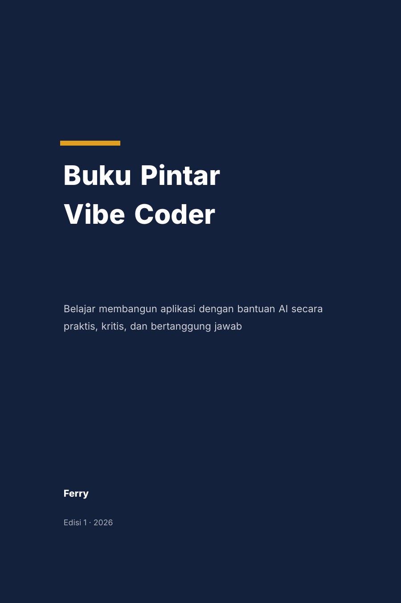

Dipakai di lapangan
Pengalaman nyata saya.
Belajar membangun aplikasi dengan bantuan AI secara praktis, kritis, dan bertanggung jawab.
Tanpa biaya. PDF untuk HP atau komputer; EPUB untuk aplikasi pembaca eBook.

01 / Pengantar
Belajar dari proses yang benar-benar dijalani, dengan ruang untuk mencoba, memeriksa, dan memperbaiki.
Buku ini adalah intisari jurnal belajar saya dari nol: pelaku usaha kuliner yang membangun aplikasi kasir dan stok dengan bantuan AI. Saya bukan programmer profesional.
Ini edisi pertama dan belum final. Ada bagian yang sudah saya pakai di lapangan, ada yang baru contoh ilustrasi, dan ada yang belum saya uji. Semuanya diberi label terang di setiap bab. Koreksi dan pengalaman Anda sangat saya hargai, dan akan membantu edisi berikutnya.
02 / Isi Buku
03 / Transparansi
Agar pembaca dapat membedakan apa yang sudah dicoba, apa yang merupakan ilustrasi, dan apa yang masih perlu diuji.
Pengalaman nyata saya.
Gambaran konsep untuk belajar.
Rencana atau hal yang belum punya bukti uji.